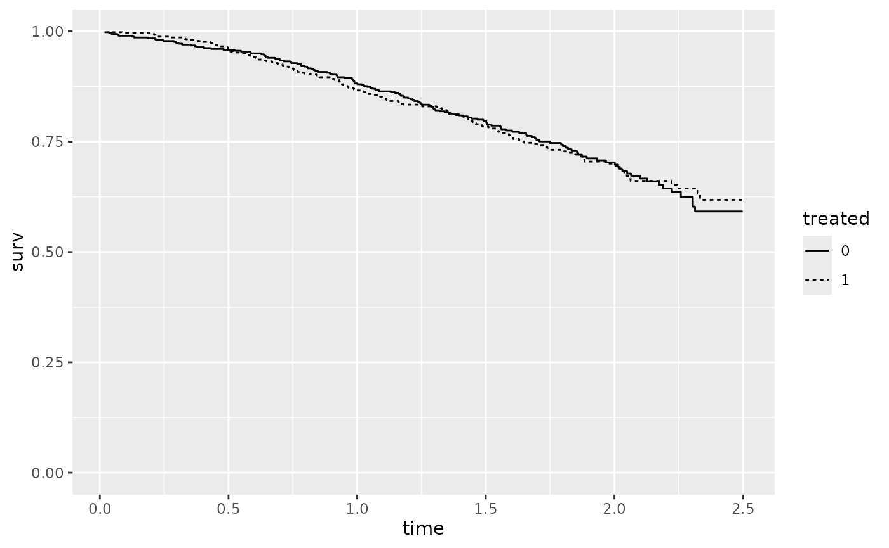

Introduction
The iterative parameter estimation (IPE) method is an alternative to the rank preserving structural failure time model (RPSFTM) method to adjust for treatment switching within a counterfactual framework. Both methods assume a common treatment effect. However, instead of using g-estimation to find the optimal value of \(\psi\), the IPE method iteratively fits a parametric survival model.
Estimation of \(\psi\)
With an initial estimate of \(\psi\) from the intention-to-treat (ITT) analysis using an accelerated failure time (AFT) model to compare the randomized treatment groups, the IPE method iterates between the following two steps until convergence:
Derive the counterfactual survival times and event indicators (possibly recensored) for patients in the control group, \[ U_{i,\psi} = T_{C_i} + e^{\psi} T_{E_i}, \] \[ D_{i,\psi}^* = \min(C_i, e^{\psi} C_i), \] \[ U_{i,\psi}^* = \min(U_{i,\psi}, D_{i,\psi}^*), \] \[ \Delta_{i,\psi}^* = \Delta_i I(U_{i,\psi} \leq D_{i,\psi}^*). \]
-
Fit an AFT model to the adjusted data set consisting of
The observed survival times of the experimental group: \(\{(T_i,\Delta_i,Z_i): A_i = 1\}\)
The counterfactual survival times for the control group: \(\{(U_{i,\psi}^*, \Delta_{i,\psi}^*, Z_i): A_i = 0\}\) evaluated at \(\psi = \hat{\psi}\).
The updated estimate of \(\psi\) is equal to the negative of the regression coefficient for the treatment indicator in the AFT model.
Estimation of Hazard Ratio
This step is the same as the RPSFTM method. Once \(\psi\) has been estimated, we can fit a (potentially stratified) Cox proportional hazards model to the adjusted data set. This allows us to obtain an estimate of the hazard ratio. The confidence interval for the hazard ratio can be derived by either
- Matching the p-value from the log-rank test for an ITT analysis, or
- Bootstrapping the entire adjustment and subsequent model-fitting process.
Concorde Trial Example
We will demonstrate the use of the ipe function with
simulated data based on the randomized Concorde trial.
We start by preparing the data and then apply the IPE method:
data <- immdef %>% mutate(rx = 1-xoyrs/progyrs)
fit1 <- ipe(
data, id = "id", time = "progyrs", event = "prog", treat = "imm",
rx = "rx", censor_time = "censyrs", aft_dist = "weibull",
boot = FALSE)The log-rank test for an ITT analysis, which ignores treatment changes, yields a borderline significant p-value of \(0.056\).
paste0("P-value", " (", fit1$pvalue_type, "): ", formatC(fit1$pvalue, format = "f", digits = 4))
#> [1] "P-value (log-rank): 0.0556"Using the IPE method with a Weibull AFT model, we estimate \(\hat{\psi} = -0.183\), which is similar to the estimate obtained from the RPSFTM analysis.
fit1$psi
#> [1] -0.182931The Kaplan-Meier plot of counterfactual survival times supports the estimated \(\hat{\psi}\).
ggplot(fit1$kmstar, aes(x=time, y=surv, group=treated,
linetype=as.factor(treated))) +
geom_step() +
scale_linetype_discrete(name = "treated") +
scale_y_continuous(limits = c(0,1))
The estimated hazard ratio from the Cox proportional hazards model is \(0.766\), with a 95% confidence interval of \((0.583, 1.006)\), closely aligning with the results from the RPSFTM analysis.
c(fit1$hr, fit1$hr_CI)
#> [1] 0.7657898 0.5826782 1.0064459Potential Convergence Issues
There is no guarantee that the IPE method will produce an unique estimate of the causal parameter \(\psi\). To see this, consider the following SHIVA data for illustration purposes only.
shilong1 <- shilong %>%
arrange(bras.f, id, tstop) %>%
group_by(bras.f, id) %>%
slice(n()) %>%
select(-c("ps", "ttc", "tran"))
shilong2 <- shilong1 %>%
mutate(rx = ifelse(co, ifelse(bras.f == "MTA", dco/ady,
1 - dco/ady),
ifelse(bras.f == "MTA", 1, 0)),
treated = 1*(bras.f == "MTA"))Now let us apply the IPE method using the Brent’s method for root finding:
fit2 <- ipe(
shilong2, id = "id", time = "tstop", event = "event",
treat = "bras.f", rx = "rx", censor_time = "dcut",
base_cov = c("agerand", "sex.f", "tt_Lnum", "rmh_alea.c",
"pathway.f"),
aft_dist = "weibull", boot = FALSE)The reported causal parameter estimate is \(\hat{\psi} = 0.953\), while the negative of the coefficient for the treatment variable in the updated AFT model fit equals \(0.950\):
fit2$fit_aft$parest[, c("param", "beta", "sebeta", "z")]
#> param beta sebeta z
#> 1 (Intercept) 6.934726180 0.495626813 13.9918302
#> 2 treated -0.949765785 0.150227468 -6.3221846
#> 3 agerand -0.003290492 0.006498532 -0.5063439
#> 4 sex.fFemale 0.322266209 0.156016643 2.0655887
#> 5 tt_Lnum -0.014139569 0.028712690 -0.4924502
#> 6 rmh_alea.c -0.671748350 0.156970327 -4.2794607
#> 7 pathway.fHR -0.174054294 0.239966697 -0.7253269
#> 8 pathway.fPI3K.AKT.mTOR -0.149492619 0.241468215 -0.6190985
#> 9 Log(scale) -0.209508066 0.076278866 -2.7466070This suggests that the \(\psi\) value has not converged. The following code demonstrates the oscillation of \(\psi\) values between 0.955, 0.951, and 0.960 after additional iterations.
f <- function(psi) {
data1 <- shilong2 %>%
filter(treated == 0) %>%
mutate(u_star = tstop*(1 - rx + rx*exp(psi)),
c_star = pmin(dcut, dcut*exp(psi)),
t_star = pmin(u_star, c_star),
d_star = ifelse(c_star < u_star, 0, event)) %>%
select(-c("u_star", "c_star")) %>%
bind_rows(shilong2 %>%
filter(treated == 1) %>%
mutate(u_star = tstop*(rx + (1-rx)*exp(-psi)),
c_star = pmin(dcut, dcut*exp(-psi)),
t_star = pmin(u_star, c_star),
d_star = ifelse(c_star < u_star, 0, event)))
fit_aft <- survreg(Surv(t_star, d_star) ~ treated + agerand + sex.f +
tt_Lnum + rmh_alea.c + pathway.f, data = data1)
-fit_aft$coefficients[2]
}
B <- 30
psihats <- rep(0, B)
psihats[1] <- fit2$psi
for (i in 2:B) {
psihats[i] <- f(psihats[i-1])
}
data2 <- data.frame(index = 1:B, psi = psihats)
tail(data2)
#> index psi
#> 25 25 0.9550293
#> 26 26 0.9511406
#> 27 27 0.9603835
#> 28 28 0.9550297
#> 29 29 0.9511409
#> 30 30 0.9603837
ggplot(data2, aes(x = index, y = psi)) +
geom_point() +
geom_line()